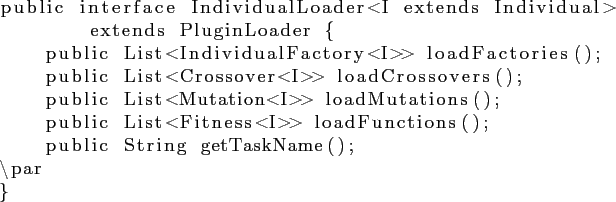

Основной интерфейс плагина — IndividualLoader.

Данный интерфейс содержит следующие методы:
- loadFactories — метод должен возвращать фабрику особей, а именно объект класса, реализующего интерфейс
IndividualFactory<I>.
Единственный метод этого интерфейса должен возвращать случайно сгенерированную особь (интерфейс Individual).
Метод standardFitness должен возвращать фитнесс-функцию для задачи, которую решает данная особь.
- loadCrossovers — метод должен возращать список доступных операторов скрещивания.
Метод apply по списку родительких особей должен возвражать список потомков, отдельно отметим, что
особи потомков должны быть новыми объектами, это требуется для корректной работы алгоритма.
- loadMutations. loadFunctions — методы аналогичны методу loadCrossovers,
должны возращать список доступных операторов мутации и подсчета фитнесс-функции.
- getTaskName — метод должен возращать название задачи, которую решает данная особь.